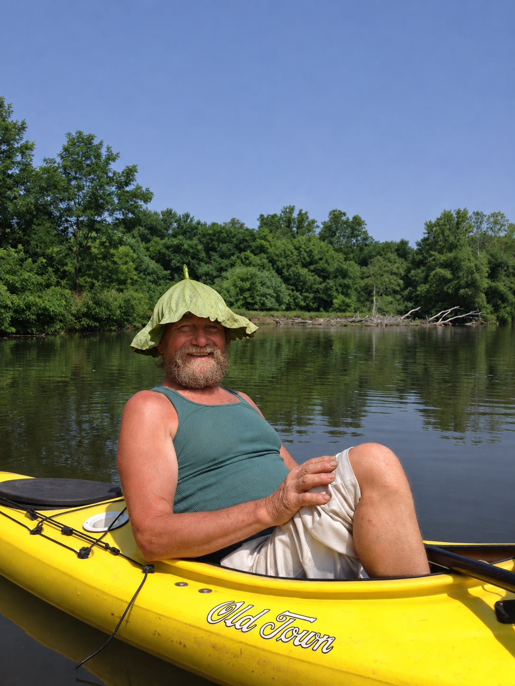
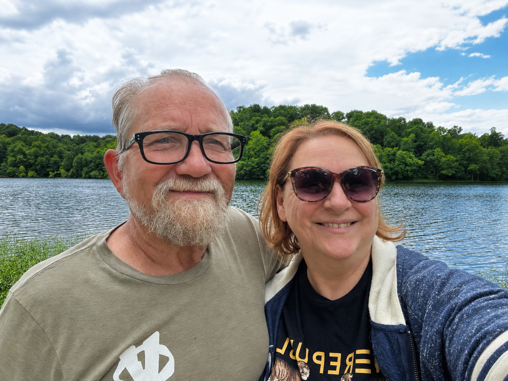
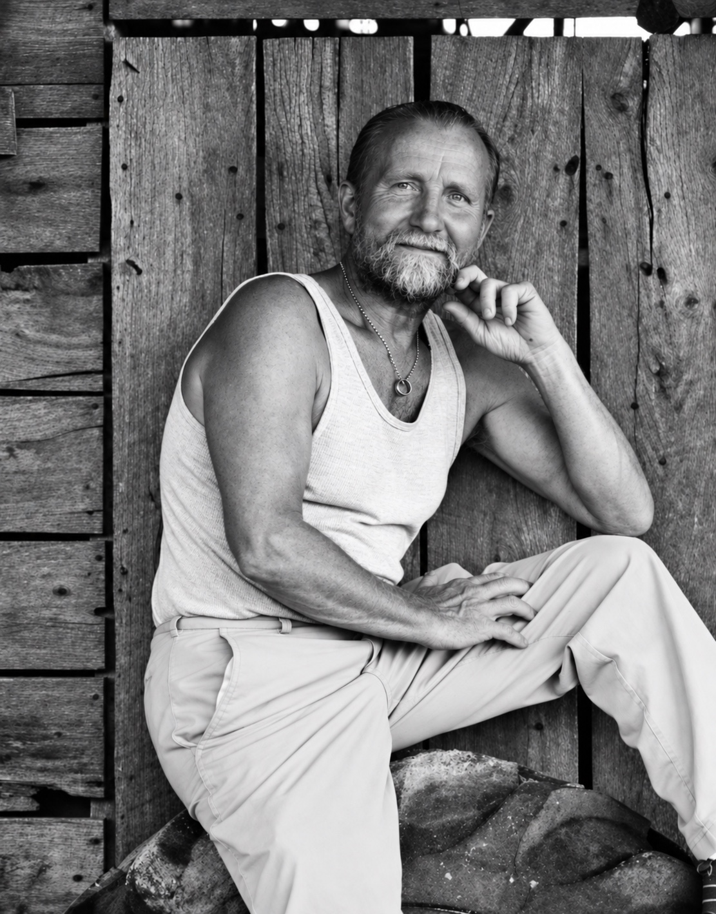

Minnesota to Alaska
The Long Walk North
I know that he hiked to Alaska. I don't yet know why he went, what happened along the way, or what he found when he arrived.
An interactive biography
A father who never stopped talking.
A daughter finally ready to listen.

In my own voice
Listen to Leslie’s introduction · 2:07

I’ve wanted to tell my dad’s story for a long time.
He hasn’t saved the world. He’s not a superhero. He’s a complicated, funny, patient man. Sometimes impatient. He loves a problem he can figure out, and he loves to play with words. I don’t think I really appreciated that about him until the last couple of years, when I started noticing how much of his memory was slipping away.
When you’re a kid, you don’t think about your parents getting old. Or at least I didn’t. And even in my forties and fifties, I could see my mom getting older, but somehow I didn’t see it with Dad.
Then one day we went for a walk in the woods. I’d spent my whole life trying to keep up with him. And that day, he asked if we could slow down. He was having trouble keeping up with me.
That shook my world.
My dad has stories about his childhood, about the things he got up to as a young man, and about being a parent. And some of them I’d heard, oh, about eighty million times. I knew what was coming next, so I stopped listening. I figured if I ever wanted to hear one of those stories again, all I had to do was ask.
For a long time, that was true. His memory was sharp, and my dad has never been shy. He’ll talk to anybody for as long as they’ll let him. But now there are stories he starts telling and can’t quite finish. For a while, the changes seemed slow. Lately, they’re coming faster than I know how to keep up with.
I hate watching that happen. I don’t know how else to say it.
So I started listening again. And I started recording some of our conversations. Here, you’ll hear him tell some of his stories, and you’ll find a few of the poems he wrote. I wanted to put them somewhere I could come back to, and somewhere other people could get to know him a little, too.
He’s my dad. I love him. And I’d like you to meet him.
This is Before the Stories Fade.
There is a saying that family isn't only the family you're born into. Sometimes family is made up of the people you choose—and the people who choose you.
My dad chose me.
He came into my life when I was very young and eventually adopted my sister and me. Technically, while he is not my biological father, that distinction never meant much to me. I don't call him my adopted dad. I don't think of him as my adopted dad.
He's just my dad.

And my dad has stories
There is an almost constant stream of words when you're around him. He'll talk while you're watching a movie, working beside him in the garden, or driving down the road to go fishing.
Give him enough time, and one story will lead to another, and then another, which will lead to another.
The lives within one life
Each chapter will eventually combine his voice, family photographs, and the pieces of history we can still recover.
Minnesota to Alaska
I know that he hiked to Alaska. I don't yet know why he went, what happened along the way, or what he found when he arrived.
Vietnam
He served in Vietnam and returned with a broken back. This chapter will hold the parts of that experience he chooses to tell.
Boeing
He helped build one of the first Boeing 747s—one more unexpected turn in a life spent learning, making, and reinventing.
Northwest Arkansas
He climbed, explored caves, and built a climbing gym. Adventure became something he could create and share with other people.
A lifetime of words
Listen to an unedited conversation with my dad about storytelling, then read the complete poem he began reciting: The Host of Deadmans Hollow.
Our family
In his twenties, with an entire life ahead of him, he chose to become the father of a little girl who wasn't biologically his—and soon, her sister too.
The way he plays with words
My dad loves the English language. I mean, loves it. Give him a word or a turn of phrase, and he can make a limerick, a poem, or a song out of it. He loves to say words, write them down, and play with what they might mean.
This corner is a place for that part of him: his poems on the page and, when we have recordings, in his own voice.
These are transcribed from his typed pages, with his original wording kept intact. You can open each page to see it as he wrote it.
Poems by my dad. Shared with his permission.
Why now
For years, knowing the outlines of his adventures seemed like enough. It isn't anymore.
My father's memory is beginning to fade. The stories I once thought I could hear whenever I wanted won't always be available to me.
So now I want to listen.
This project is my attempt to capture as many of those stories as I can while he can still tell them. It isn't meant to turn him into someone larger than he is. My dad is complicated. He is also brilliant, creative, endlessly curious, and almost impossible to describe with a single title.
He chose us.
This is my chance to choose his stories.
I'm making it for him. I'm making it for me.
And I'm making it before the stories fade.